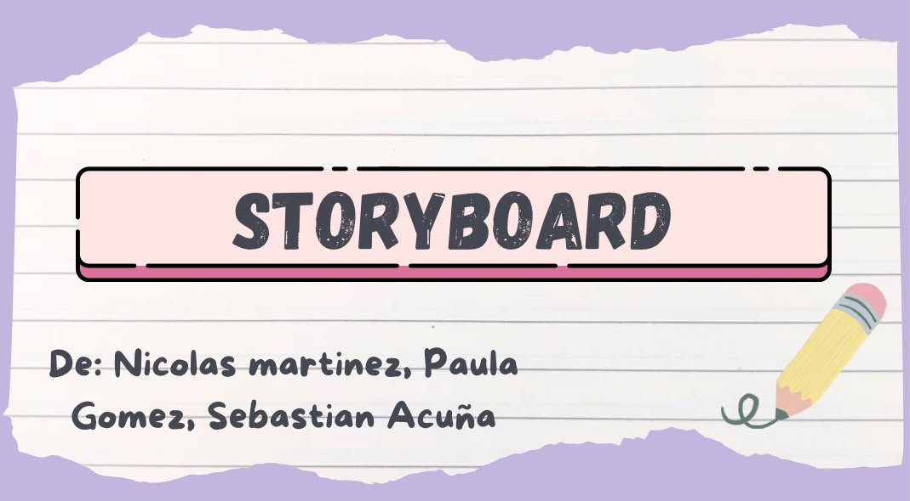
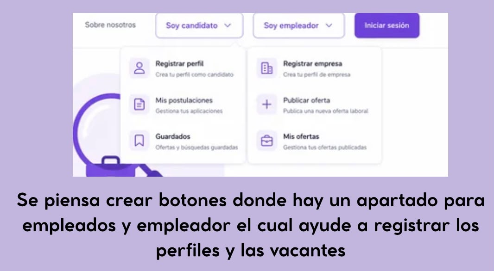
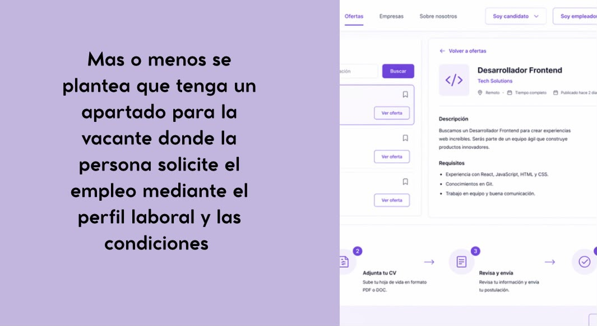
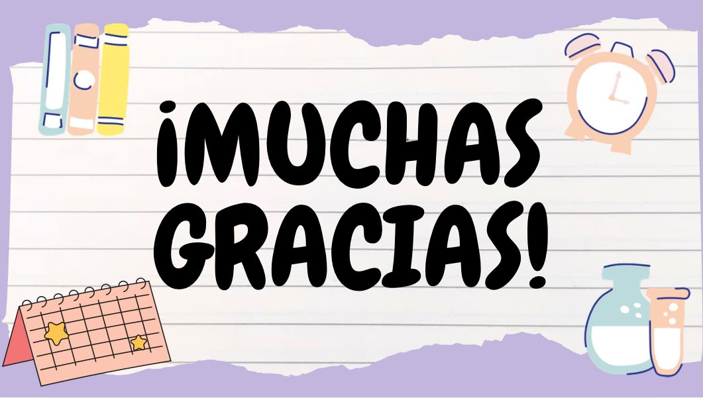

El storyboard presenta la idea inicial de BrasiliaTrabaja y organiza las pantallas principales de la página de empleo. Muestra cómo candidatos y empleadores podrán registrarse, consultar información y realizar sus acciones dentro de la plataforma.

1. Presentación: portada del storyboard elaborado por el equipo.

2. Tipos de usuario: opciones para registrar perfiles, publicar vacantes y administrar postulaciones.

3. Postulación: consulta de requisitos, envío de hoja de vida y confirmación de la solicitud.

4. Cierre: final de la secuencia visual que orienta el prototipo.
Cómo leer el storyboard
El storyboard representa un recorrido conceptual, no una garantía de que cada función esté conectada a un servicio en producción. La secuencia introduce la plataforma, diferencia los perfiles de candidato y empleador y muestra cómo se podría consultar una vacante y avanzar hacia una postulación.
La revisión de cada viñeta permite comprobar si las acciones aparecen en el orden esperado, si los requisitos de una oferta están visibles y si el usuario sabe qué hacer después. Este material orienta la construcción del prototipo y facilita conversar sobre mejoras antes de invertir en una integración completa.
En una siguiente iteración se recomienda probar las pantallas con personas de la comunidad, anotar dudas y ajustar etiquetas, formularios y mensajes de confirmación.